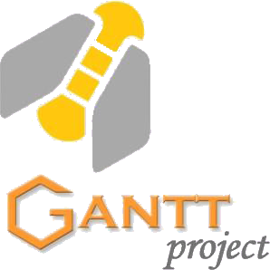
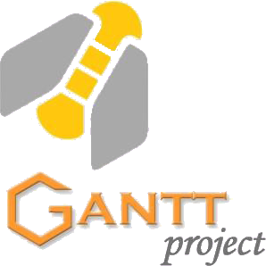

Mes études d'informatique comprennent des enseignements à grande partie basée sur divers projets, ce qui apporte une exéprience pratique et améliore mes compétences. Voici les projets sur lesquels j'ai eu l'occasion de travailler jusqu'aujourd'hui.


Comus Party est une application web proposant divers jeux en ligne.
Je n'ai pas participé à la conception initiale, mais je suis entré
dans le groupe en 2nde année pour apprendre les méthodes agiles et
SCRUM.
Plus de détails sur Comus Party
Comus Party sur GitHub

 


Book'n'Go est une application web sur laquelle j'ai travaillé avec un groupe de 4 durant ma première année d'informatique à l'IUT de Bayonne. Son but est d'aider les touristes à organiser leurs voyages tout en leur permettant de partager leurs expériences.
Ce projet a tout d'abord été pensé pourapprendre la conception et la gestion de projet.
Plus de détails sur Book'n'Go